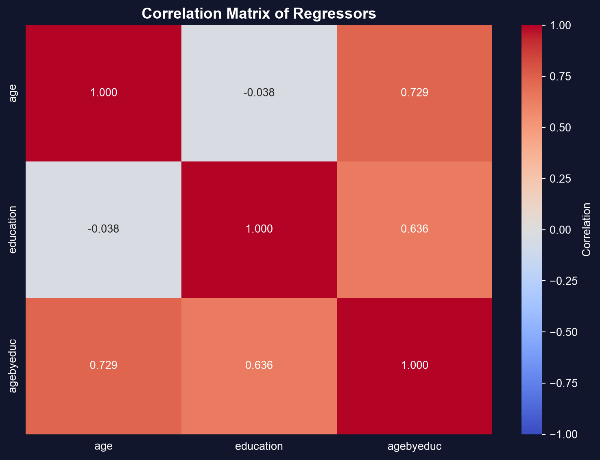
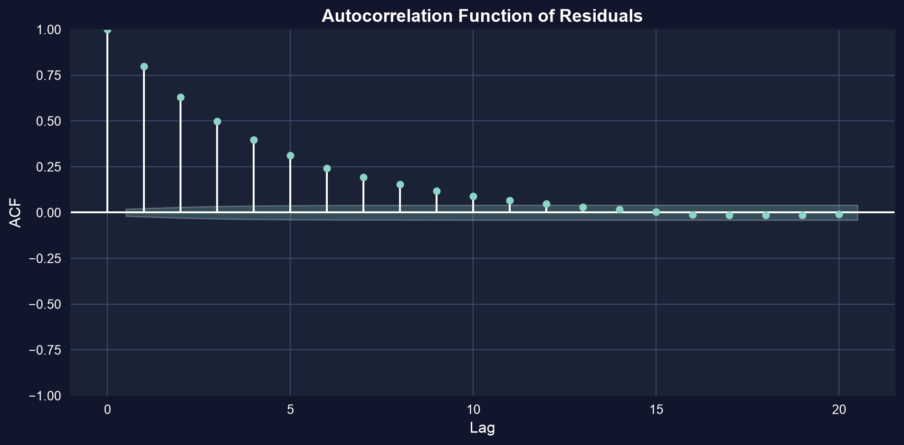
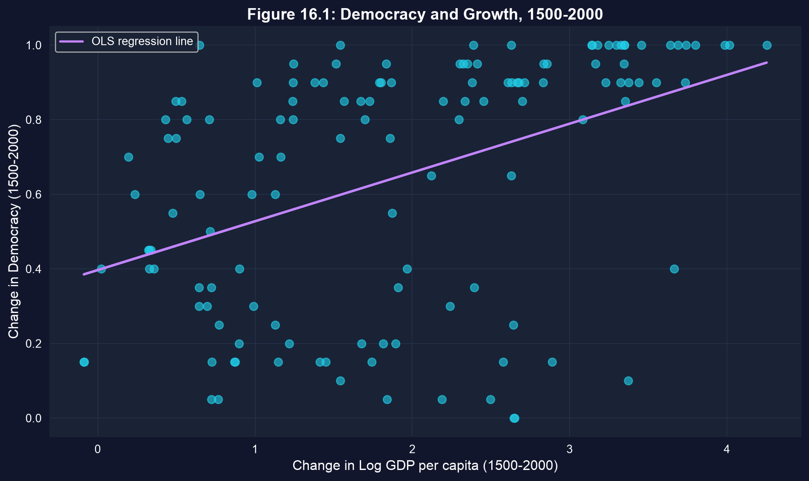
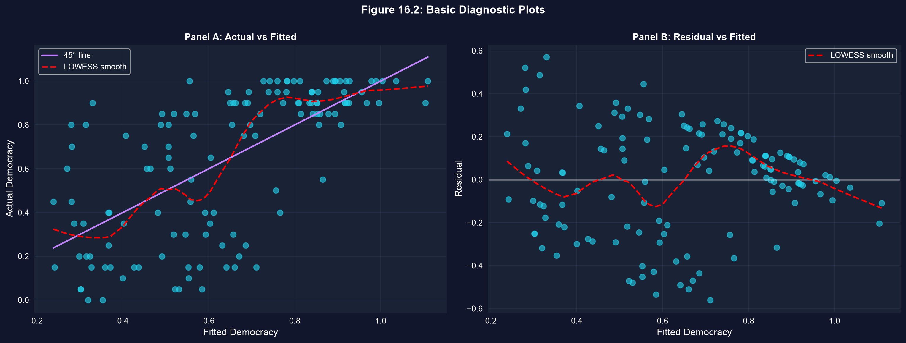
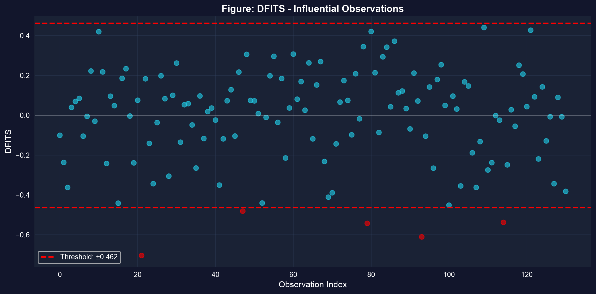

Act I · The tension
A regression table never refuses to run. It hands you coefficients, standard errors, and t-statistics whether or not the model is sound.
So the real skill isn’t fitting the model — it’s interrogating it afterward. This chapter is a checklist: diagnose multicollinearity, heteroskedasticity, autocorrelation, omitted variables, and influential points before you trust a single number.
A model that passes no diagnostics is a hypothesis, not a result.
Act II · The investigation
Add an age × education interaction to an earnings model and the standard errors on age and education balloon. The variance inflation factor quantifies it: \(\text{VIF}_j = 1/(1 - R_j^2)\).
!pip install -q pyfixest # pyfixest not preinstalled in Colab (-q = quiet)
import pandas as pd # tabular data
import pyfixest as pf # OLS, R-style formulas, robust SEs
from statsmodels.stats.outliers_influence import variance_inflation_factor # VIF
import statsmodels.api as sm # adds the intercept column VIF needs
url = "https://raw.githubusercontent.com/quarcs-lab/data-open/master/AED/AED_EARNINGS_COMPLETE.DTA"
earn = pd.read_stata(url) # 872 full-time workers: earnings, age, education
base = pf.feols("earnings ~ age + education", data=earn, vcov="HC1") # tidy SEs
full = pf.feols("earnings ~ age + education + agebyeduc", data=earn, vcov="HC1") # SEs balloon
X = sm.add_constant(earn[["age", "education", "agebyeduc"]]) # design matrix + intercept
for i, name in enumerate(X.columns): # VIF for each regressor
print(name, round(variance_inflation_factor(X.values, i), 1)) # agebyeduc ≈ 37 → severe
Correlation matrix of age, education, and their interaction — values near +1 are the fingerprint of multicollinearity.
Multicollinearity is a precision problem, not a bias problem: predictions and joint \(F\)-tests stay valid.
Ask first: is my estimate biased, or just my uncertainty? The fix is completely different.
When \(\text{Var}[u_i \mid \mathbf{x}_i]\) varies with \(x\), default SEs are wrong (usually too small). Robust (White / HC1) SEs leave the coefficients untouched and fix only the standard errors.
!pip install -q pyfixest # pyfixest not preinstalled in Colab
import pandas as pd # tabular data
import pyfixest as pf # OLS + robust variance-covariance
url = "https://raw.githubusercontent.com/quarcs-lab/data-open/master/AED/AED_EARNINGS_COMPLETE.DTA"
earn = pd.read_stata(url) # 872 workers
classic = pf.feols("earnings ~ age + education", data=earn) # default (homoskedastic) SEs
robust = pf.feols("earnings ~ age + education", data=earn, vcov="HC1") # White / HC1 robust SEs
print(classic.se()) # coefficients are identical...
print(robust.se()) # ...only the SEs change (education SE ~13% larger here)Default to robust SEs for cross-sectional data — they are valid whether or not heteroskedasticity is present.
An AR(1) error \(u_t = \rho u_{t-1} + \varepsilon_t\) with \(\rho = 0.8\) makes default SEs far too small. The autocorrelation function of the residuals is the detector.
!pip install -q pyfixest # pyfixest not preinstalled in Colab
import numpy as np, pandas as pd # arrays + tabular data
import pyfixest as pf # OLS to get residuals
from statsmodels.tsa.stattools import acf # autocorrelation function
np.random.seed(10101) # reproducible draw
n = 10000; e = np.random.normal(0, 1, n) # i.i.d. shocks
u = np.zeros(n) # container for AR(1) errors
for t in range(1, n): u[t] = 0.8*u[t-1] + e[t] # ρ = 0.8 persistence → errors remember the past
x = np.random.normal(0, 1, n) # a regressor
df = pd.DataFrame({"y": 1 + 2*x + u, "x": x}) # y built with the autocorrelated error
resid = pf.feols("y ~ x", data=df)._u_hat # fit OLS, pull the residuals
print(acf(resid, nlags=5, fft=False).round(3)) # large lag-1 value that decays slowly
Residual autocorrelation function: a large lag-1 spike well outside the confidence band, decaying gradually across later lags.
Autocorrelation doesn’t bias the slope — it fakes precision. HAC (Newey–West) SEs restore honest inference.
Does growth cause democracy? Regress the 500-year change in democracy on growth alone, then add institutional controls (executive constraints, independence date, religion). If growth was proxying for institutions, its coefficient should collapse.
!pip install -q pyfixest # pyfixest not preinstalled in Colab
import pandas as pd # tabular data
import pyfixest as pf # OLS, R-style formulas
url = "https://raw.githubusercontent.com/quarcs-lab/data-open/master/AED/AED_DEMOCRACY.DTA"
dem = pd.read_stata(url) # 131 countries, 1500–2000
bi = pf.feols("democracy ~ growth", data=dem, vcov="HC1") # bivariate
mr = pf.feols("democracy ~ growth + constraint + indcent + catholic + muslim + protestant", # + controls
data=dem, vcov="HC1")
print(bi.coef()["growth"], mr.coef()["growth"]) # 0.131 → 0.047: the effect collapses
The bivariate fit: a clear positive slope — but much of it is institutions, not growth.
Growth’s coefficient falls 0.131 → 0.047 (a 64% drop) once controls enter, and \(t \approx 6.7 \to 1.8\): a “significant” effect becomes indistinguishable from zero.
Fit the model, then look. A residual-vs-fitted plot exposes heteroskedasticity (a fan) and nonlinearity (a curve); DFITS flags observations that move the fit when removed.
!pip install -q pyfixest # pyfixest not preinstalled in Colab
import pandas as pd, numpy as np, matplotlib.pyplot as plt # data + plotting
import pyfixest as pf # OLS fit
import statsmodels.formula.api as smf # refit for influence stats
from statsmodels.stats.outliers_influence import OLSInfluence # DFITS / DFBETAS
url = "https://raw.githubusercontent.com/quarcs-lab/data-open/master/AED/AED_DEMOCRACY.DTA"
dem = pd.read_stata(url)
fit = pf.feols("democracy ~ growth + constraint + indcent", data=dem) # the model to diagnose
plt.scatter(fit.predict(), fit._u_hat, alpha=0.5) # residual vs fitted: look for a fan / curve
plt.axhline(0, ls="--") # reference line at zero
m = smf.ols("democracy ~ growth + constraint + indcent", data=dem).fit() # OLSInfluence needs a statsmodels fit
dfits = OLSInfluence(m).dffits[0] # DFITS for every observation
k, n = 4, len(dem); thresh = 2*np.sqrt(k/n) # rule of thumb: flag |DFITS| > 2√(k/n)
print(int((np.abs(dfits) > thresh).sum()), "influential points") # count the flagged rows
Residuals centred on zero with no fan or curve — the picture you want before trusting the model.
A pattern here (fan, curve, or drift) means a violated assumption — not a failed regression, but a model to rethink.

DFITS by observation: points past the \(\pm 2\sqrt{k/n}\) band have outsized influence on the fitted values.
Investigate influential points — don’t delete them reflexively. Ask whether your conclusion survives their removal.
Act III · The resolution
Objection. “My growth coefficient is significant and robust SEs barely moved — so the effect is real.”
Response. Robust SEs fix heteroskedasticity, not endogeneity. The democracy–growth slope was biased by omitted institutions, and no standard-error correction touches bias — only controls or an instrument do. A clean residual plot and a tight SE can still sit on top of a fundamentally biased estimate.
Diagnostics for bias (OVB, endogeneity) and diagnostics for precision (HC1, HAC) are separate checklists. Run both.